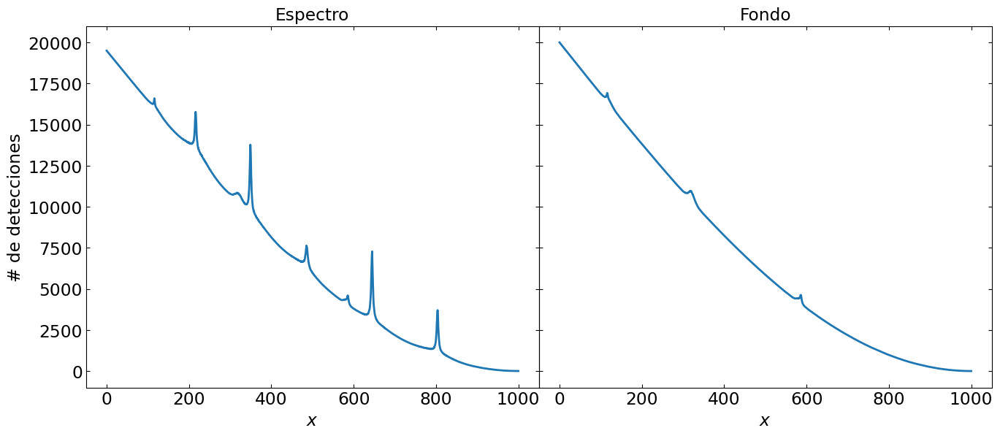

Manejo y análisis de datos
Manejo y análisis de datos
En el archivo espectros_2024.tar.gz hay un conjunto de datos correspondiente a mediciones que se tomaron en un experimento. Al descomprimir y extraer este archivo se creará una estructura de carpetas y archivos con la cual trabajará su programa.
Tenga en cuenta que:
Toda la información sobre los archivos y las condiciones de medición archivos se encuentra en el archivo registro.log.
Cada directorio corresponde a un día distinto de medición con datos tomados en distintas condiciones.
Cada archivo tiene varias columnas, la primera corresponde al eje horizontal (\(x\)) y las restantes son mediciones realizadas todas en las mismas condiciones.
El número de detecciones (altura de los espectros) es proporcional al tiempo de medición. Por ejemplo si la medición A llevó el doble de tiempo de la medición B entonces su altura deberá ser aproximadamente el doble.
Los espectros están montados sobre un fondo importante, que se ha medido separadamente cada día.
Los datos tienen la forma:
Por consideraciones externas se sabe que cada pico tiene la forma de una función pseudo-Voigt, que consiste en una combinación lineal de una función gaussiana y una lorentziana, cuyos centros en este caso están levemente desplazados.
Se pide que analice estos datos y los muestre en forma conveniente. Su programa debe:
Leer los datos en la estructura dada y el archivo log.
Normalizar los datos, acorde al tiempo de medición en cada caso.
Determinar la línea de base (fondo) correspondiente a cada espectro y restarla.
Realizar un ajuste de cada pico y obtener su área y ancho.
Determinar y graficar de manera adecuada el ancho y el área de cada pico como función de la temperatura.
Nota
El archivo comprimido con los datos se encuentra en data